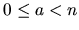

In 1976 the ``Four Color Map Theorem" was proven with the assistance of a
computer. This theorem states that every map can be colored using only four
colors, in such a way that no region is colored using the same color as a
neighbor region.
Here you are asked to solve a simpler similar problem. You
have to decide whether a given arbitrary connected graph can be bicolored.
That is, if one can assign colors (from a palette of two) to the nodes in such
a way that no two adjacent nodes have the same color. To simplify the problem
you can assume:
- no node will have an edge to itself.
- the graph is nondirected. That is, if a node a is said to be connected
to a node b, then you must assume that b is connected to a.
- the graph will be strongly connected. That is, there will be at least
one path from any node to any other node.
The input consists of several test cases. Each test case
starts with a line containing the number n (
1 < n < 200) of different
nodes. The second line contains the number of edges l. After this, l lines
will follow, each containing two numbers that specify an edge between the two
nodes that they represent. A node in the graph will be labeled using a number
a (
).
An input with n = 0 will mark the end of the input and is
not to be processed.
You have to decide whether the input graph can be
bicolored or not, and print it as shown below.
3
3
0 1
1 2
2 0
9
8
0 1
0 2
0 3
0 4
0 5
0 6
0 7
0 8
0
NOT BICOLORABLE.
BICOLORABLE.
Miguel Revilla
2000-08-21